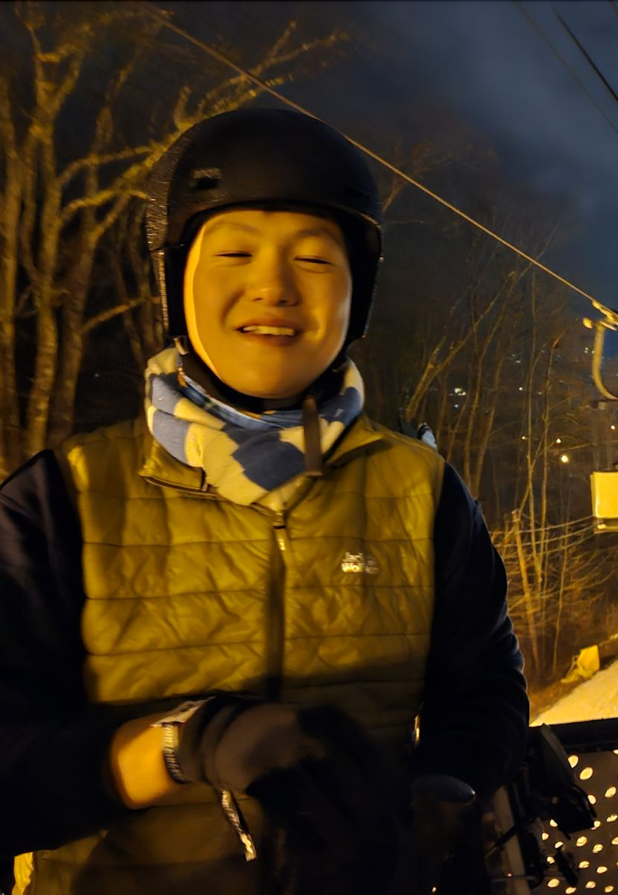

Mark Chen

About Me
I'm an undergraduate student at
Columbia Engineering
anticipated to graduate in May 2026, majoring in theoretical computer
science (TCS), with some exposures to math and physics (please see
courseworks).
As a young aspirant in TCS, I'm open-minded and broadly interested in
different branches of TCS, and I'm also curious to understand the many
underlying technical details of fields related to TCS, which is why I've
been exploring many fields in pure mathematics and theoretical physics
recently.
I'm currently spending more time on how property testing and
unconditional lower bounds play together for a strong encryption no
matter whether conditions like "P = NP" are true or not. I also enjoy
building tangible programs, Chinese history, walking, painting, and
getting boba with my free time!
My email is yc3879-at-columbia-dot-edu. I also go by Yang (阳, yáng)
Chen (陈, chén).
Work Experience
SWE Intern at Google (3x)
Data Pipeline & Fine-Tuning ML for Content Recommendations, (Incoming)
Summer 2024
Over-the-Top (OTT) Platform Service, Summer 2023
-
Worked on Digital Video Recorder (DVR) feature for Over-the-Top
streaming services. Wrote extensive automated test system that samples
recordable entities and goes through the processing of recording them
on various devices to ensure DVR playability bugs are caught in hours,
reduced from days.
- Had a lot of good food on campus with fun people :).
YouTube Commerce Payments, Summer 2022
-
Worked on non-recurring plan fulfillment for YouTube (non-recurring
items are like stickers, etc, or even subscription services but only
for current period in some countries) by working with RPC protocols on
the payment backend.
Gap year from 2020-2021 before college and worked on tech-focused,
early-stage investments in China. During that time, I worked with
ZhenFund, K2VC, and Ivy Capital and did research in markets and products
related to SaaS model, social media, cross-border e-commerce, fast
fashion commerce, etc.
Research
At Columbia
In High School
Active Learning over DNN: Automated Engineering Design Optimization for
Fluid Dynamics Based on Self-Simulated Dataset
[ARXIV].
Yang Chen.
Top 300 Scholar, Regeneron Science Talent Search (STS), 2020.
State Second Prize in Engineering, Michigan Science and Engineering
Fair (SEFMD), 2019.
First in Engineering Mechanics Category, Science and Engineering
Fair of Metro Detroit (SEFMD), 2019.
North America Regional 1st Prize,
Global Honorable Mention (Top 10) in Computer Science Category, Shing-Tung Yau High School Science Awards, 2018.
A Novel Treatment Optimization System and Top Gene Identification via
Machine Learning with Application on Breast Cancer
[Journal of Biomedical Science and Engineering].
Yuhang Wu, Yang Chen.
Category Honorable Menstion, Science and Engineering Fair of Metro
Detroit (SEFMD), 2018.
Teaching-Related Experiences
Teaching Assistant (TA)
Including holding weekly office hourse, grading, and occasionally making
homework or exam questions.
At Columbia
-
Introduction to Computational Complexity (COMS 4236) taught by Henry
Yuen (Fall 2023).
-
Analysis of Algorithms (COMS 4231) taught by Tim Roughgarden (Fall
2023).
Seminars & Talks
-
Quantum Complexity Theory
(co-organized a semester-long weekly seminar given by a graduate
student with Columbia Undergraduate Learning Seminar in Theoretical
Computer Science).
- (Columbia Math Directed Reading Program)
-
Quantum Information Theory (part of the undergraduate math seminar
class).
Relevant Undergraduate Courseworks
Computer Science
-
Theory: Advanced Cryptography (intersecting TFNP),
Unconditional Lower Bounds and Derandomiazation, Computational
Complexity, Analysis of Algo.
-
Engineering: Competitive Programming, Computer Networks,
Dabatases, Systems Programming, Data Structures.
Math
-
Mondern Analysis I&II, Mondern Algebra I&II, Functions of Complex
Variables, Topology.
Physics
-
Accelerate Intro to Physics I&II (Used Kleppber & Kolenkow for
Mechanics, Purcell & Morin for E&M, and Covered Quantum Mechanics).
Awards and Recognitions
-
College: Putnam Math Competition (Participated Once: Score of
21, Ranked 769 in 2023)
-
Scholarships (for First-Year Admitted Students): Johns Hopkins
University
Hodson Trust Scholar
(a total of $156,000 scholarship over four years that goes to
tuition), University of Pennsylvania
Ben Franklin Scholar.
-
High School: Regeneron STS Scholar, Shing-Tung Yau High School
Science Awards Global Top 10 in CS, ISEF State Second Prize and
Regional Best in Category, AIME Qualifier.
Et Cetera
I spent two summers in high school painting and drawing. I still do casual
drawings from time to time :). I also really like playing basketball and
play tennis from time to time, though these have been hard since I came to
New York...
I'm also a big fan of Chinese history. For trivia, I can match most
Gregorian years to their corresponding Chinese era names.
{kind=link}